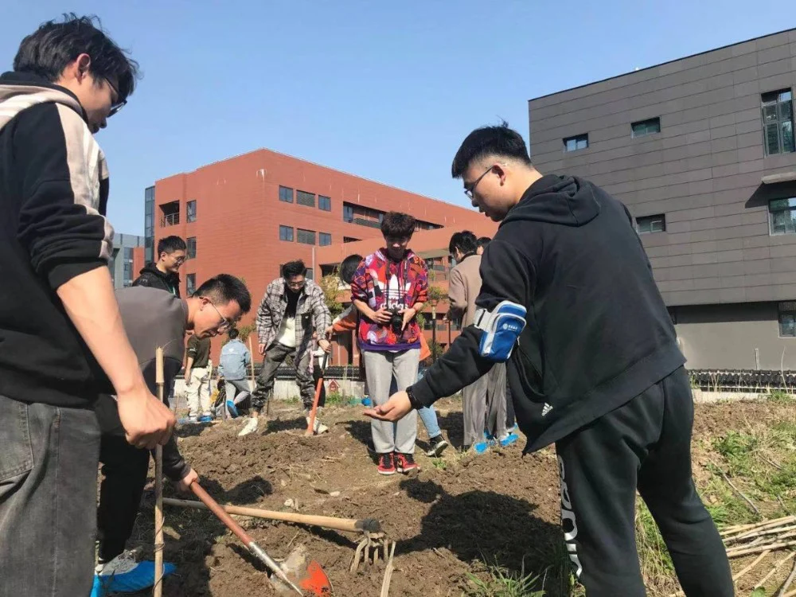
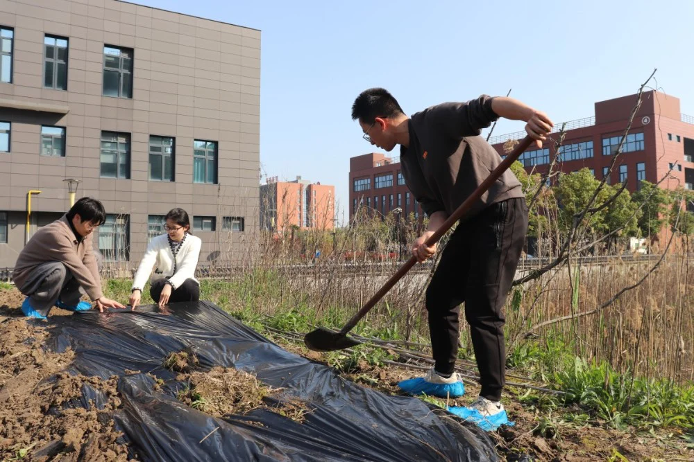
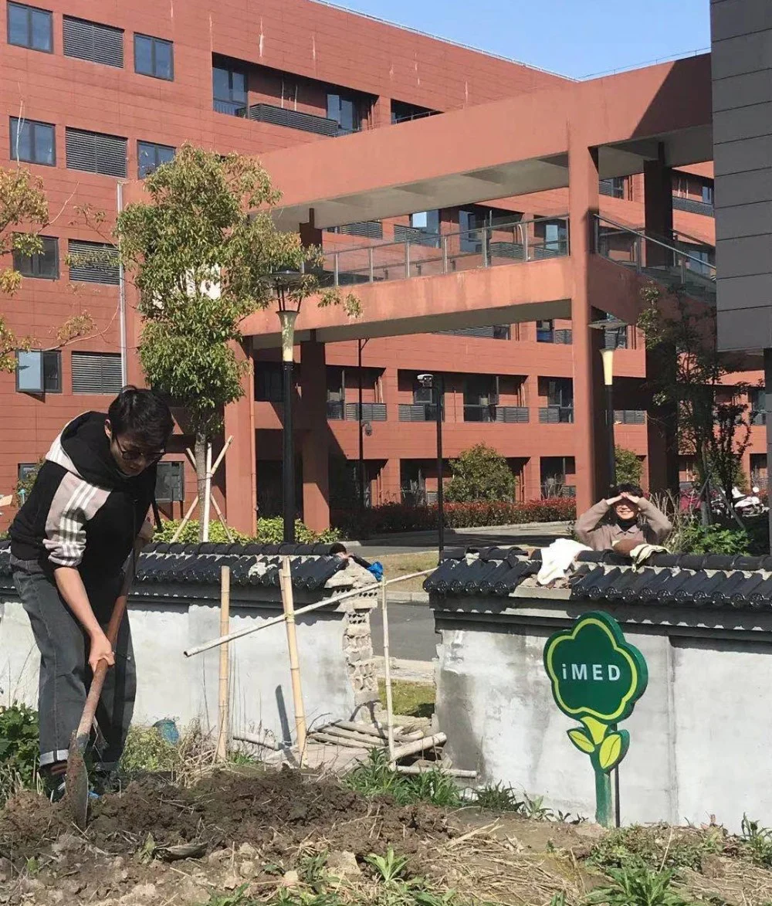

潇潇春雨唤醒了万物，灿烂的阳光穿过树叶间的空隙，照耀在新生的花儿上，也洒满了医工所园区的每一个角落，连空气中也飘荡着春的气息。雨季过去了，春天的脚步更近了。在这生意盎然的季节里，团队成员在园区西面的田野上，进行了以“稼穑之乐”为主题的种植活动。

按照定好的时间，大家纷纷来到种植区域，翻土-整地-施肥-播种-铺土，所有人分工合作，动作娴熟地开始了劳作。不一会儿，种植区上已经铺满了大家播种的苗儿。伴随着欢笑声，原本光秃秃的土地上，已经整齐地变成一小块一小块新绿。灌溉的清水在天空划过一道弧线，阳光下，出现绚丽的彩虹，是希望的田野。
通过自己动手种植植物，不但在实践中获取到相关的植物知识，体会劳作的乐趣和艰辛，同时缓解了工作的疲惫。通过此次活动，大家既体验了生活、也锻炼了互助协作的能力。

正是有着对收获的期待，才会更加辛勤的耕耘，低头挥洒汗水，乐在其中。就像我们在科研生活中一直坚信的那样，所有的努力都会开花结果。
让我们一起等待，秋收之时，一切美好如约而至。
